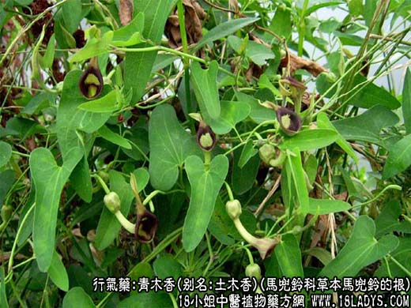

原文出处:本文转载自中药大全网。
原文连接:https://www.daquan.com/post/1974.html
原文连接:https://www.daquan.com/post/1974.html

_青木香的功效与作用1.png)
【中药概述】
青木香，别名：土木香、祁木香、总状土木香、藏木香，为马兜铃科草本植物马兜铃的根。辛、苦，微寒。归肝、胃经。
1．辟秽解毒：用于夏季痧胀，痈肿疔毒，毒蛇咬伤等，可单用，或与白芷配伍应用。
2．行气止痛：用于肝胃气滞，胸腹胀痛，脘腹疼痛，疝气，高血压等，可配伍行气药等同用。
【药物形态】
本品呈圆锥形，略弯曲，长5～20cm。表面黄棕色或暗棕色，有纵皱纹及须根痕。根头粗大，顶端有凹陷的茎痕及叶鞘残基，周围有圆柱形支根。质坚硬，不易折断，断面略平坦，黄白色至浅灰黄色，有凹点状油室。气微香，味苦、辛。
【药效鉴别】青木香化湿浊之功不及木香，但以通滞散结，顺气止痛为胜。擅于理气泄热治胃痛。
【临证应用】青木香用好醋浸，挟于腋下，治腋臭，《平易方》。
【药理作用】本品粗制剂对各种动物，无论静脉注射或口服均能引起一定的降压作用，一般煎剂作用较强。
【化学成分】主要成分为马兜铃酮、马兜铃酸、尿囊素、青木香酸、木兰花碱等。
【用量用法】3——10g，水煎服，或入丸散剂。外用适量。